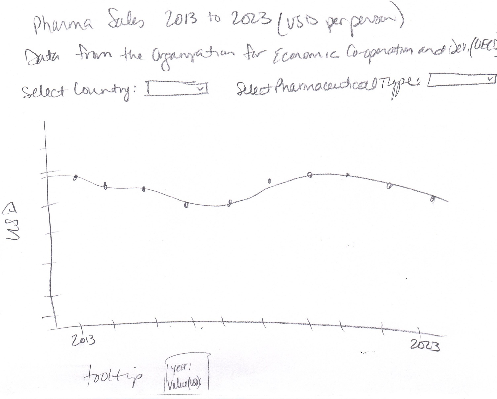

Design Process
Two initial hand-drawn sketches helped determine layout, interaction methods, and chart type before coding.
Sketch 1: Initial bar chart with dropdown layout and tooltip concept.

Sketch 2: Revised sketch with a line chart to show trends over time.
Layout Decisions
Dropdowns are positioned above the chart for easy access. The title provides context, and a tooltip follows the cursor for instant feedback.
Axes and lines are clearly labeled and animated to draw attention to trends.
Using the Visualization to Discover Insights
The two screenshots below demonstrate specific insights discovered using the visualization:

Screenshot 1: United Kingdom total pharmaceutical sales showing a consistent upward trend from 2013 to 2023.

Screenshot 2: COVID-19 spike in 2020 in Italy for Hypnotics and sedatives.